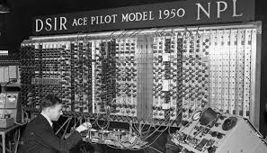
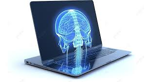
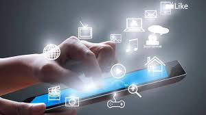

L'informatica è la scienza che studia i computer e il modo in cui possono essere utilizzati per risolvere problemi.
Si occupa non solo delle macchine in sé, ma anche del software, ovvero i programmi che permettono ai computer di eseguire compiti specifici.
Questa disciplina include diversi aspetti, come:
Come funzionano i programmi, cioè le istruzioni che il computer segue passo dopo passo;
Lo studio dei sistemi operativi, che gestiscono le risorse del computer (memoria, processore, dispositivi);
Le reti informatiche, che permettono ai computer di collegarsi tra loro e scambiarsi informazioni, come accade su Internet;
La programmazione, ovvero l'arte di scrivere codice per creare applicazioni, siti web, videogiochi e molto altro.
L’informatica è diventata fondamentale nella nostra vita quotidiana, perché oggi usiamo i computer ovunque:
a scuola per studiare, a casa per divertirci o comunicare, e in tantissimi lavori per organizzare, analizzare dati o automatizzare compiti.
Grazie all'informatica possiamo:
Comunicare facilmente, ad esempio tramite email, messaggi o videochiamate;
Fare ricerche, trovare informazioni in pochi secondi su qualsiasi argomento;
Semplificare attività quotidiane, come fare la spesa online, prenotare viaggi o gestire documenti digitali.
In poche parole, l’informatica ci aiuta a essere più veloci, efficienti e connessi con il mondo che ci circonda. È una scienza in continua evoluzione e sempre più importante per il futuro.
La storia dell'informatica è legata anche alla macchina di Alan Turing, un modello teorico inventato nel 1936. Turing ha creato questa "macchina di Turing" per capire meglio come risolvere problemi complessi con i calcoli. 
Anche se non era una macchina vera, ha dimostrato che qualsiasi problema che un computer può risolvere, può essere risolto con il suo modello.
Questo ha gettato le basi per lo sviluppo dei primi computer elettronici negli anni '40, come l'ENIAC, e ha portato alla nascita dei moderni computer che usiamo oggi, sia per studiare che per lavorare.
CORIUSITà
Turing ha lavorato a Bletchley Park per decifrare i messaggi codificati dai nazisti.
Qui ha contribuito alla costruzione della "Bombe", una macchina elettromeccanica che
serviva a trovare le impostazioni corrette della macchina Enigma. Anche se non era un
computer digitale nel senso moderno, era un primo passo verso la computazione automatizzata.
L'informatica ha molti aspetti positivi. Grazie ai computer possiamo fare cose più velocemente, comunicare con persone lontane, studiare e lavorare in modo più semplice. Ci aiuta anche a trovare informazioni su internet e a divertirci con giochi e video.
Però, ci sono anche aspetti negativi. Stare troppo tempo davanti allo schermo può far male alla salute, e c'è il rischio che i dati personali vengano rubati. Inoltre, non tutti hanno accesso alle tecnologie, e questo può creare disuguaglianze tra le persone.
menu paragrafi 
comportamento in rete
l'uso delle tecnologie ICT (Information and Communication Technologies) ha cambiato la vita dei giovani negli ultimi vent'anni. Viene descritto come i giovani utilizzano internet per apprendere, socializzare e giocare, mostrando una grande versatilità nell'uso dei dispositivi digitali.
Tuttavia, l'uso eccessivo di internet può portare a dipendenza e ansia, specialmente quando manca la connessione o lo smartphone 
Ci sono studi che parlano di fenomeni come il FOMO (Fear of Missing Out), ovvero la paura di essere tagliati fuori dalle attività sociali online, e la nomofobia, che è la paura di restare senza connessione o smartphone.
Si parla anche di un fenomeno più estremo, l'Hikikomori, dove i giovani si isolano completamente dalla vita sociale per periodi prolungati, spesso influenzati da una dipendenza dalla tecnologia o da difficoltà sociali ed emotive.